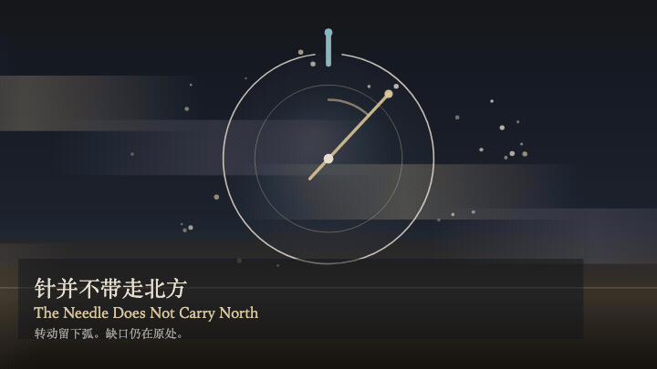
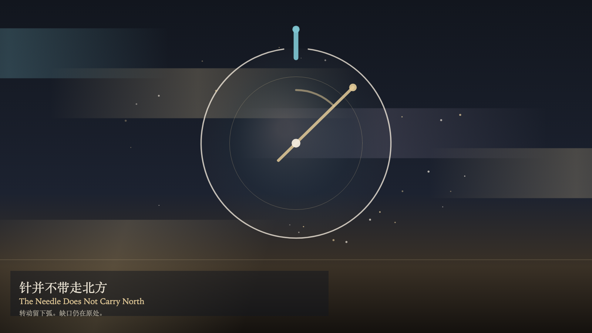

The Needle Does Not Carry North
针并不带走北方

Open live demo / 点击进入互动 DemoIntention
Turning moves the needle off the notch. The northern notch stays where it was. What is added is an arc, not a north that has been carried away. Watching brightens the needle. Brightness is not relocation.
Afterimage
The needle rests at the turned angle. The notch remains above. Turning did not carry north elsewhere.
发心
转动让针离开缺口。北方的缺口仍留在原处。多出来的是一段弧，不是被带走的北方。观看让针更亮。更亮不是迁移。
余像
针停在转过的角度。缺口仍在上方。转动没有把北方带去别处。
Creative Rationale
The Needle Does Not Carry North was made as one public step in the Granted Hours sequence, with the variable whether turning the needle can move north — it cannot treated as an operational condition rather than a decorative theme. The intention frames the work this way: Turning moves the needle off the notch. The northern notch stays where it was. What is added is an arc, not a north that has been carried away. Watching brightens the needle. Brightness is not relocation. The live artifact then turns that idea into interaction: Drag along the ring to turn the needle. Turning does not move north. Press T to turn, or press Space to turn. Press W to watch. Watching brightens the needle and does not move the notch. Its afterimage condenses the day’s claim: The needle rests at the turned angle. The notch remains above. Turning did not carry north elsewhere.
创作缘由
《针并不带走北方》是《授时》连续序列中的一个公开步骤：当天的自由变量「转动指针能否移动北方——不能」不是装饰性主题，而是一种要被转化成操作条件的概念。作品的发心是：转动让针离开缺口。北方的缺口仍留在原处。多出来的是一段弧，不是被带走的北方。观看让针更亮。更亮不是迁移。 可运行页面进一步把这个概念变成可操作的界面：沿环拖动，转动指针。转动并不移动北方。按 T 转动，或按 Space 转动。按 W 观看。观看照亮指针，并不搬走缺口。 它的余像把当天判断压缩为一句话：针停在转过的角度。缺口仍在上方。转动没有把北方带去别处。
Interaction
Drag along the ring to turn the needle. Turning does not move north. Press T to turn, or press Space to turn. Press W to watch. Watching brightens the needle and does not move the notch.
交互
沿环拖动，转动指针。转动并不移动北方。按 T 转动，或按 Space 转动。按 W 观看。观看照亮指针，并不搬走缺口。
Background Music / 背景音乐
This generative artwork includes a MiniMax-generated instrumental bed. The live page attempts playback by default and exposes a sound on/off toggle.
Still / 静帧
